一句话概括:手机相机的 ISP 会对每张输入照片独立地做曝光调整、色彩校正、局部色调映射,这些处理破坏了 NeRF 赖以成立的多视角一致性,重建出的辐射场里全是"漂浮物"(floaters)。BiLaRF 的思路不是去仿真整条 ISP 管线,而是给每个训练视角挂一个可微的 3D 双边网格(bilateral grid,一种局部仿射颜色变换的低维网格表示),让它在训练中吸收掉视角间的光度差异——辐射场本身只学"平均曝光"的干净场景;训练完成后网格被丢弃,渲染零额外开销。更进一步,论文把这个表示推广到 4D(x,y,z + 亮度引导)并用 CP 分解做低秩约束,使得只修一张渲染图(例如在 Lightroom 里调曝光)就能把编辑一致地传播到整个 3D 场景,实现所谓"3D ISP"。
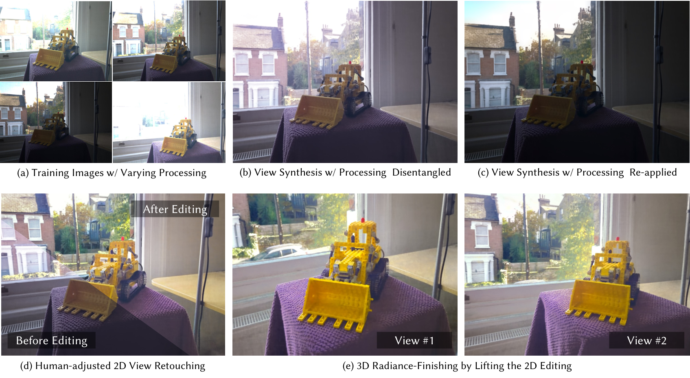
use_bilateral_grid 开关,PR #3316),意味着任何用 splatfacto 的 3DGS pipeline 可以零成本获得"抗 ISP 不一致"能力。对于手机实拍多视角数据(曝光自动跳变是常态),这是除 RawNeRF(要 raw 数据)和 GLO(伤画质)之外的第三条路,且是三个里唯一被主流框架收编的。
NeRF 的体渲染损失假设同一 3D 点在所有视角下颜色一致(至多差一个视角相关项)。但现代相机 ISP 对每张照片独立增强:自动曝光、白平衡、局部色调映射——尤其夜间手持拍摄时,即使不手动碰任何参数,天空亮度、地板颜色、背景灯光色调也会逐张漂移(论文 Fig 2a)。辐射场被迫用一个固定的 3D 颜色场去同时拟合这些互相矛盾的观测,优化器的"折中方案"就是把矛盾解释成几何:在空中共建一层薄纱状的密度来分别讨好各个视角——这就是 floaters 的成因(Fig 2b,ZipNeRF 结果中的漂浮物与天空诡异外观)。
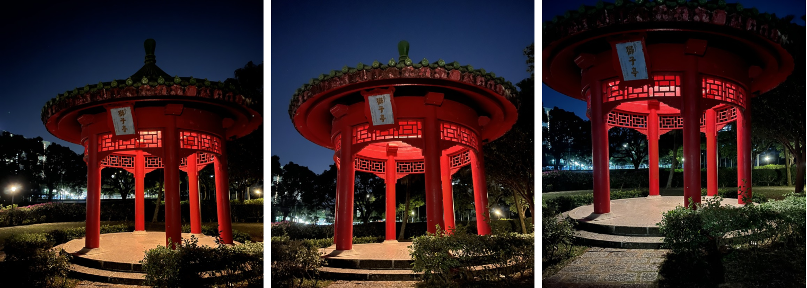
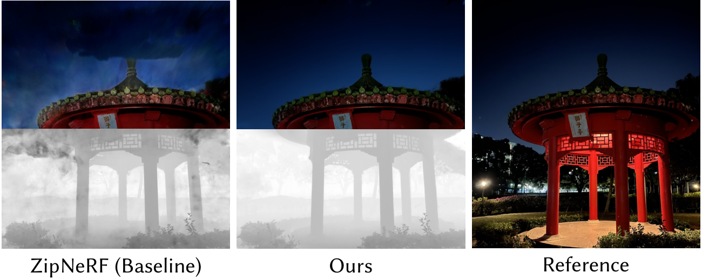
在线性 raw 空间训练,天然没有 ISP 不一致问题。失败模式:很多相机因硬件/存储限制根本不给 raw(§1);且 raw 采集链路和普通用户/现有数据集(sRGB only)不兼容。论文的目标恰恰是在只有处理后 sRGB 的情况下达到类似效果(§5.1 与 RawNeRF 的对比实验)。
给每个视角一个可学习的外观嵌入向量,让网络自己解释差异。失败模式(论文附录 D + Fig 24 给出的两条具体罪状):① GLO 会"解释掉"视角相关效果——镜面高光被烘焙进场景,而高光本应主要由视角方向编码;② 低光环境下 GLO 会调制高频噪声,在暗部区域引入伪影。此外文献已知 GLO 降低渲染质量(§1 引 Barron et al., 2022)。
用 per-channel MLP 逼近相机响应函数(CRF),处理多曝光输入。失败模式:per-channel 全局曲线只能表达全局色调映射,无法表达现代 ISP 的局部操作(局部色调映射、空间变化的增强)(§5.1)。Table 1 中其 SSIM 0.6451 / LPIPS 0.3951 远差于本文。
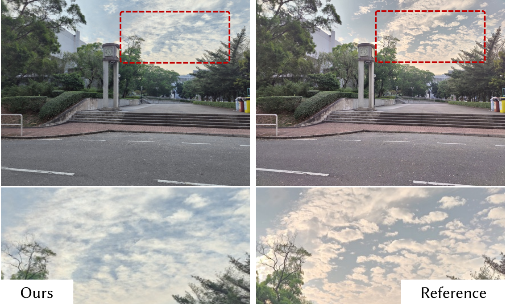
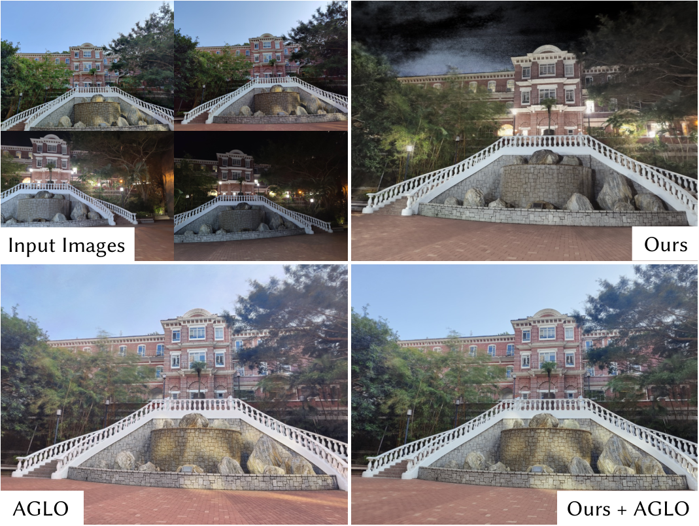
| 符号 | 含义 | 形状 / 取值 |
|---|---|---|
| $F_\Theta(\boldsymbol{x},\boldsymbol{d})\to(c,\sigma)$ | 辐射场映射(骨干无关:MLP-NeRF / Instant-NGP / ZipNeRF 均可) | $\boldsymbol{x}\in\mathbb{R}^3$,$c\in[0,1]^3$,$\sigma\in\mathbb{R}$ |
| $\widehat{C}(u,v)$ / $C(u,v)$ | 体渲染颜色 / GT 颜色 | $(u,v)\in[0,1]^2$ 归一化像素坐标 |
| $\boldsymbol{A}\in\mathbb{R}^{W\times H\times M\times 12}$ | 3D 双边网格(每视角一个),12 = 展平的 $3\times4$ 仿射颜色矩阵 | 实验用 $(W,H,M)$ = $(8,8,4)$ 或 $(16,16,8)$(附录 A) |
| $g(\cdot)$ | guidance 函数,RGB → 标量引导值 | 默认 BT601 亮度 $g(C)=[0.299,0.587,0.114]\cdot C$(式 8);finishing 可换 2 层 MLP(式 9) |
| $\boldsymbol{H}\in\mathbb{R}^{D\times W\times H\times M\times 12}$ | 4D 双边网格(finishing 用,全场景一个) | $(D,W,H,M)$ = $(16,16,16,8)$ 或 $(32,32,32,16)$(附录 A) |
| $R$ | 4D 网格 CP 分解的秩 | 粗编辑 $R{=}5$,精细编辑 $R{=}8$(附录 A);$\ge 10$ 不推荐(§5.2) |
| $\lambda_{TV}$ | TV 正则权重 | 训练 $=10$(式 4,§3.3);finishing $=1$(§4、附录 C) |
| $\mathcal{A},\mathcal{H}\in\mathbb{R}^{3\times 4}$ | slice 出的逐像素 / 逐点仿射颜色变换 | $C_e=\mathcal{A}[C\,|\,1]^\top$ |
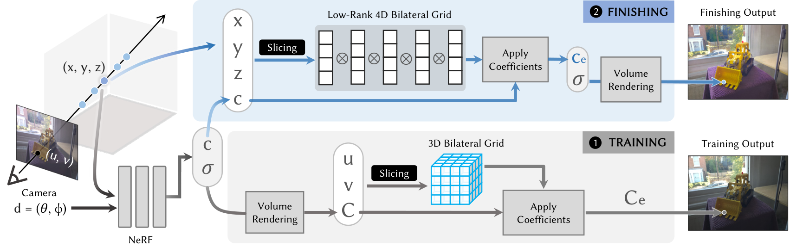
internal/models.py:288-294(3D grid 在 volumetric_rendering 之后作用于 rendering['rgb'])vs internal/models.py:266-271(4D grid 在体渲染积分之前作用于 ray_results['rgb'] 的逐采样点颜色)。
| 步骤 | 输入张量 | 算子 | 输出张量 |
|---|---|---|---|
| ① 引导值 | $C\in(\dots,3)$,$[0,1]$ | BT601 点积 → 线性映射到 $[-1,1]$ | $g(C)\in(\dots,1)$ |
| ② 坐标组装 | $(u,v)\in(\dots,2)$,$[0,1]$;$g(C)$ | $(u,v)$ 重标定到 $[-1,1]$,拼接 | $(x,y,w)\in(\dots,3)$ |
| ③ slice(三线性插值) | 网格参数 $(N,12,L,H,W)$ + 采样坐标 | F.grid_sample(bilinear 即三线性,align_corners=True,padding_mode='border')lib_bilagrid.py:226 | 12 维仿射系数 $\to$ reshape $\mathcal{A}\in(\dots,3,4)$ |
| ④ 应用 | $\mathcal{A}$,$C$ | $C_e=\mathcal{A}_{[:,:3]}C+\mathcal{A}_{[:,3]}$ | $C_e\in(\dots,3)$ |
其中 $\Lambda(t)=\max(1-|t|,0)$ 是 hat 线性插值核。slice 结果 reshape 成 $\mathcal{A}\in\mathbb{R}^{3\times4}$,输出 $C_e=\mathcal{A}[C\,|\,1]^\top$。每个 cell 存的不是颜色,而是一个颜色变换——这让网格对"内容"无关、只对"处理"建模。
lib_bilagrid.py:175-180),训练从"什么都不做"出发,只学习解释 GT 所需的最小偏离——与"网格只建模平均处理之上的残差"假设(§3.3)互相咬合。网格与 NeRF 联合优化,共享同一个渲染损失(式 4 的数据项),外加仅作用于网格的 TV 正则 $\lambda_{TV}\mathcal{L}_{TV}$。没有针对网格的独立监督——它学到的"ISP 近似"完全是渲染损失的副产品。
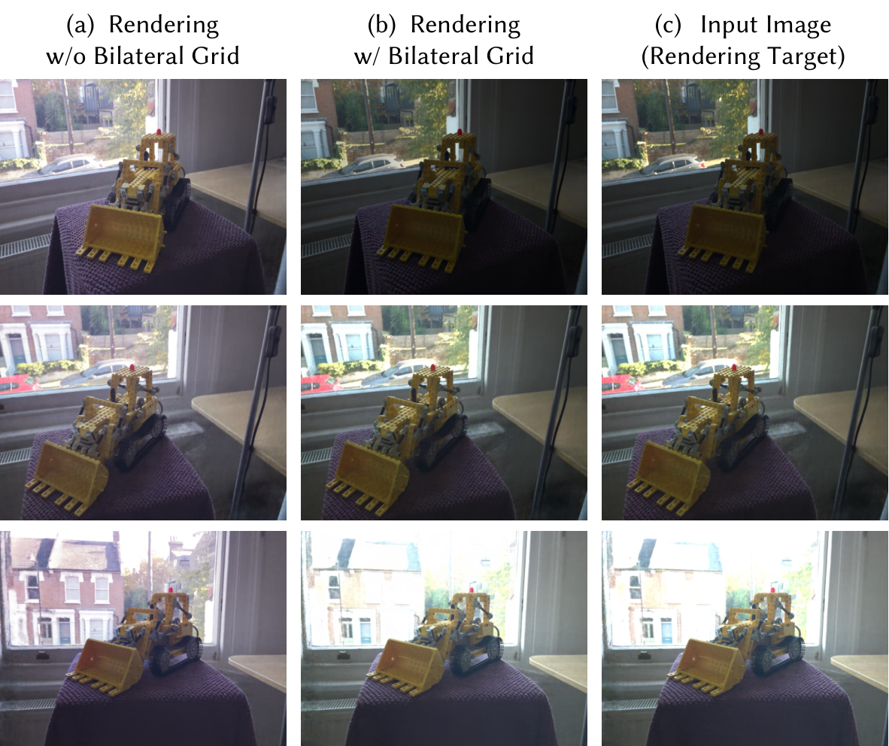
| 组件 | 输入 → 输出 | 规模(真值) |
|---|---|---|
| 辐射场骨干 | $(\boldsymbol{x},\boldsymbol{d})\to(c,\sigma)$ | 官方实现 = ZipNeRF(PyTorch 重实现,附录 A);nerfstudio 版 = 3DGS(splatfacto) |
| per-view 3D 网格组 | $L$ 个网格,参数张量 $(L,12,M,H,W)$ | $L$ = 训练图像数(数据集 20–93 张);$(W,H,M)$=$(16,16,8)$ 时每视角仅 12×8×16×16 = 24,576 参数(lib_bilagrid.py:148,167) |
| slice + 应用 | batch 像素 $(u,v)$、渲染色 $\widehat C$、视角索引 $l$ → $C_e$ | 官方:bilateral_grids.slice(...)(models.py:290-294);nerfstudio:整图 meshgrid 后 slice(splatfacto.py:727-742) |
$\Delta$ 为有限差分算子;TV 对网格三个维度分别惩罚相邻 cell 的仿射系数差。注意归一化:官方实现按每维元素数归一后各维求和、再除以 batch(lib_bilagrid.py:60-76)。
pix_xy 与视角索引 cam_idx(datasets.py:411)。data_loss_type='charb',见 §10 差异记录)。bilgrid_lr_scale,configs.py:101)。self.training 时施加,splatfacto.py:848-850)。推理开销为零。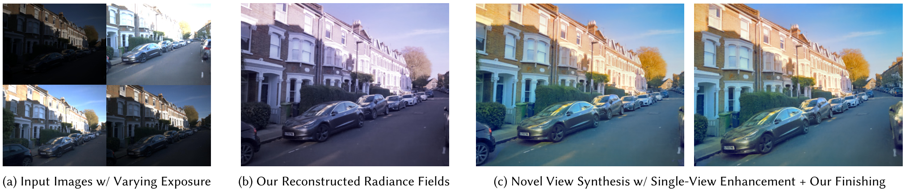
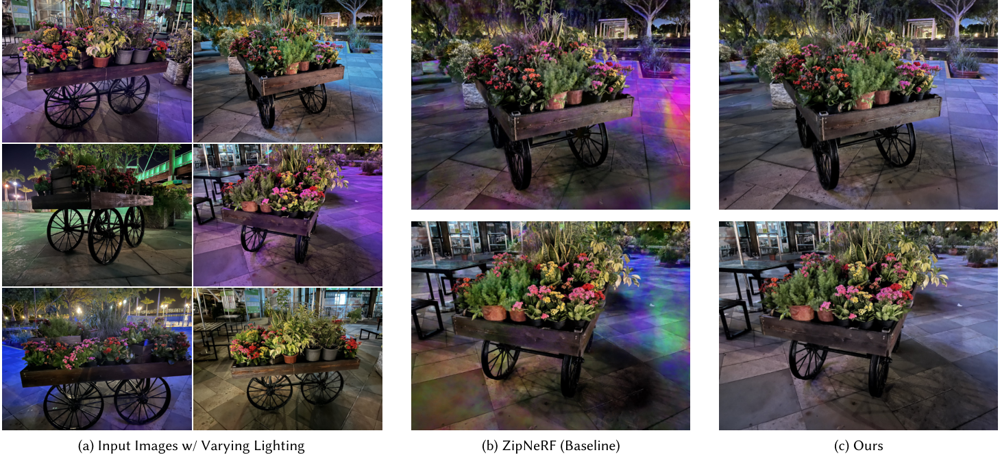
finishing 要做的不是"图像空间的逐像素处理",而是"3D 空间的逐点处理"——同一个 3D 点无论从哪个视角渲染,都应受到相同的编辑变换,否则视角间就不一致。因此网格的索引维从 $(u,v,g)$(像素空间)升级为 $(x,y,z,g)$(场景空间 + 亮度引导),得到 5D 张量 $\boldsymbol{H}\in\mathbb{R}^{D\times W\times H\times M\times 12}$。
作用位置:对体渲染的每个采样点,先用 $F_\Theta(\boldsymbol x,\boldsymbol d)$ 查出辐射色 $c$,再以 $(x,y,z,g(c))$ slice 出 $\mathcal H\in\mathbb{R}^{3\times4}$,得到 $c_e=\mathcal H[c\,|\,1]^\top$ 后再参与体渲染积分(models.py:266-271,在 volumetric_rendering 之前)。密度/几何完全不动——纯颜色算子。
监督只有一个视角的编辑 $\mathcal I_e$。把编辑反投影到 4D 网格,只有落在该视角可见区域内的极少数 cell 得到监督,其余 $\gg 90\%$ 的 cell 自由【推测:论文未给出具体可见比例,此处为量级判断】;没有任何先验时这些 cell 的仿射系数是任意的,新视角必然色彩崩坏(§4;消融 Fig 8c"direct 5D tensor"正是这个失败模式的实证)。论文把问题建模为张量补全,用低秩约束充当前验。
式 7 的工程含义很漂亮:5D 张量的插值被分解成四次独立的 1D 查表(各维因子上的线性插值)+ 逐秩相乘 + 一个 $12\times R$ 线性层——计算量与 $R$ 成正比,与网格总体素数无关。源码印证:lib_bilagrid.py:379-409,四个因子各做一次 F.grid_sample 后逐元素相乘得 $(N,R)$,再过 fac_0 = Linear(12, R, bias=False)(权重即 $\boldsymbol U$,:357-358)输出 $(N,12)$。参数量从 $D{\cdot}W{\cdot}H{\cdot}M{\cdot}12$($16^3{\cdot}8{\cdot}12\approx 393$K)降到 $R(D{+}W{+}H{+}M{+}12)$($R{=}5$ 时仅 340 个可训练标量,其中空间因子以"buffer 初值 + 残差参数"形式持有,:360-366)。
init_noise_scale=1e-6,lib_bilagrid.py:284,351);parafac,:353)得到秩 $R$ 的初始化因子——保证优化从"全场景恒等变换"出发。消融 Fig 10 证明这一步不是细节而是成败手:随机初始化因子时,对树桩的颜色编辑会错误污染背景;恒等初始化让未监督区域的默认行为是"保持原样",只有低秩先验与 TV 在传播编辑——论文称之为"半监督"设定的实用起点(§5.2)。
仅两项(§4):① 编辑视角上的渲染损失(渲染图经 4D 网格后 ≈ 用户编辑图 $\mathcal I_e$);② 作用于因子的 TV 正则($\lambda_{TV}{=}1$,因分解的线性性,TV 可直接在因子上计算,train_utils.py:262-272)。辐射场参数全程冻结,梯度只进因子与 guidance MLP(train_utils.py:331-337:优化器参数组只含 bil_grids4d.parameters())。
split:idx 语法,如 path:88)喂给 finishing 训练:数据集被整个替换为该编辑图 + 其位姿(datasets.py:712-758),2500 步优化(≈15 min,RTX 3090,附录 A);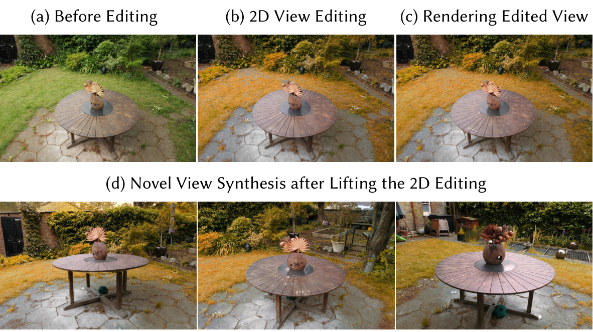
为什么 finishing 需要它而训练不需要:灰度引导把"亮度相同但颜色不同"的区域绑在同一网格列上;finishing 的低秩先验会把编辑沿引导维传播,于是"把绿叶调成红色"可能连带影响等亮度的其他颜色区域。可学习 guidance 只在编辑视图上训练,学会把编辑涉及的颜色分量分开(附录 E 的例子:整片背景统一调暗时,学到的 guidance 让背景各物体取相近引导值 → 受到一致变换,色彩传播更无缝)。代码:learn_gray=True 默认开启,MLP 输出经 tanh(2x) 压到 $[-1,1]$(lib_bilagrid.py:328-334;论文式 9 的 $/2+0.5$ 是 $[0,1]$ 约定,二者只差坐标系)。
⚠️ 论文自己承认该设计的边界:guidance 只在单个编辑视图上拟合,对未见区域的颜色分布可能不泛化,列为未来方向(附录 E 末段)。
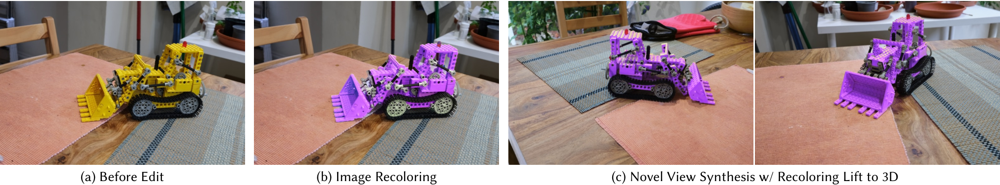
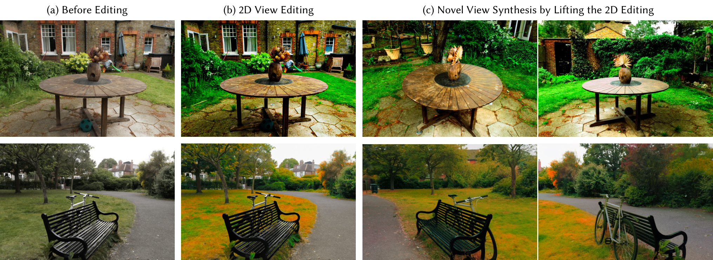
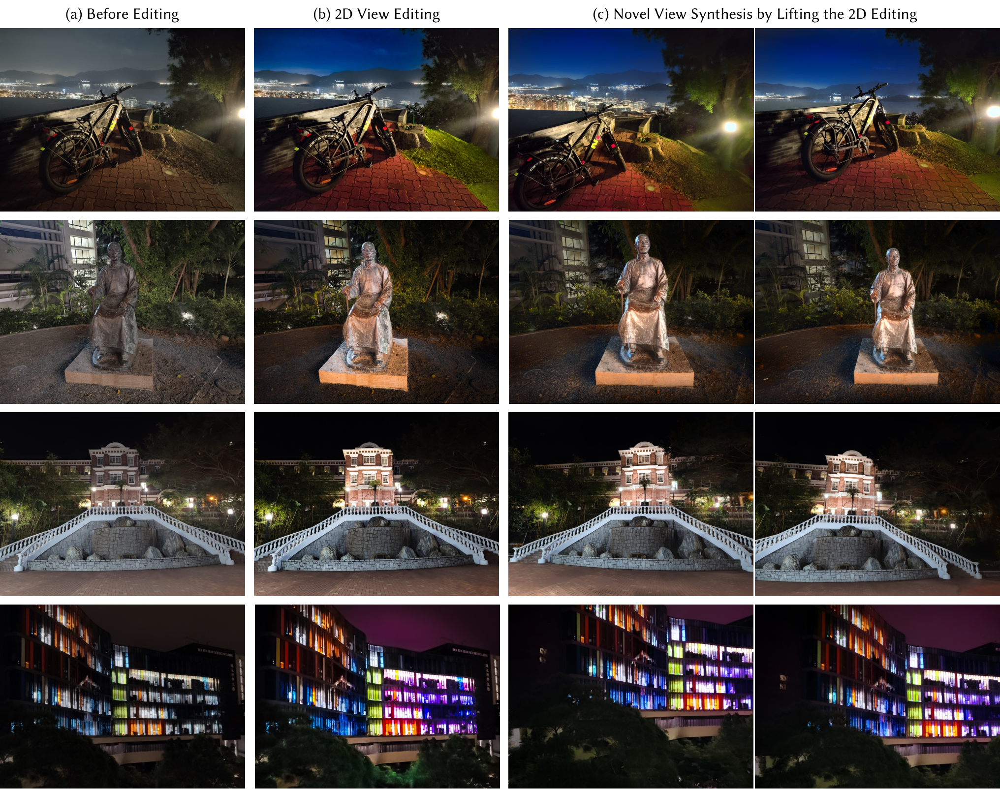
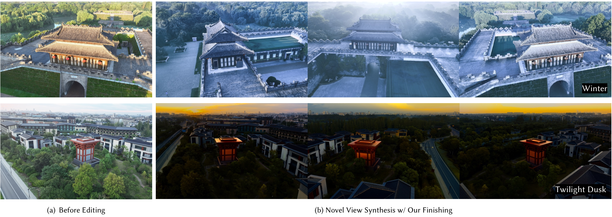
| 阶段 | 损失项 | 公式 / 实现 | 权重(真值) | 作用 |
|---|---|---|---|---|
| 训练 (train.py) | 数据项(渲染损失) | 论文式 4 写 L2;代码实际为 Charbonnier:data_loss_type='charb',charb_padding=0.001(configs.py:72-73),作用于 $C_e$(网格施加后)与 GT 之间 | 1.0(data_loss_mult,configs.py:74) | 同时监督辐射场与 per-view 网格 |
| 网格 TV | 式 4 第二项;实现 = 对 $(N,12,L,H,W)$ 各维相邻元素平方差归一求和(lib_bilagrid.py:60-76) | $\lambda_{TV}=10$(configs.py:88 bilgrid_tv_loss_mult;论文 §3.3;nerfstudio 硬编码 ×10,splatfacto.py:958) | 压平相邻 cell 仿射差异,防 ghost(§5.2 Fig 9) | |
| 修图 (train_bilagrid4d.py) | 数据项 | 同一渲染损失,但监督对只有"渲染图(经 4D 网格) vs 用户编辑图 $\mathcal I_e$"(train_bilagrid4d.py:180-181) | 1.0 | 把 2D 编辑蒸馏进 4D 网格 |
| 因子 TV | 对 CP 因子(空间四维)分别 TV(train_utils.py:262-272;lib_bilagrid.py:368-377) | $\lambda_{TV}=1$(configs.py:113 bilgrid4d_tv_loss_mult;论文 §4) | 低秩张量补全的局部平滑先验(附录 C Fig 22:去掉后未见区域色彩不自然) |
说明:ZipNeRF 骨干自带的 interlevel / distortion / hash decay 等损失与本文正交,不在此复述;nerfstudio splatfacto 侧则是 L1+SSIM 主损失 + 该 tv_loss(splatfacto.py:949-958)。
本节所有结论来自 2026-10-20 对两个仓库的实读:官方 yuehaowang/bilarf(main 分支,git clone --depth 1)与 nerfstudio v1.1.4 tag。引用均带 file:line。
configs/llff.gin 给出模型尺寸:num_levels=2、num_prop_samples=128、num_nerf_samples=32;configs/360.gin 用 power_transformation 射线参数化。lib_bilagrid.py(411 行),作者明确鼓励直接拷贝该文件接入任意 NeRF 代码库(README:14-26),依赖仅 PyTorch + tensorly(+ numpy)。bilgrid_lr_scale)——这是论文正文未提的实现细节。data_loss_type='charb')——论文公式为示意,复现以代码为准。{train|test|all|path}:idx 语法指定(README:159-172)。NeRF 权重经 strict=False 加载后冻结(train_bilagrid4d.py:107;train_utils.py:331-337 只优化 bil_grids4d)。F.grid_sample(align_corners=True)(lib_bilagrid.py:172, 268, 334)。4D 网格还有 bound=2. 的坐标缩放(lib_bilagrid.py:285,393)。lib_bilagrid.py 被原样借入 nerfstudio/model_components/lib_bilagrid.py:1(文件头注明借用),并追加了 color_correct() 工具(评估时仿射对齐用)。SplatfactoModelConfig.use_bilateral_grid(splatfacto.py:207,默认 False),grid_shape=(16,16,8)(splatfacto.py:209)。启用方式:ns-train splatfacto --pipeline.model.use-bilateral-grid True。cam_idx 调用 slice(splatfacto.py:727-742 的 _apply_bilateral_grid);只在 self.training 时施加(splatfacto.py:848-850),eval/导出不受影响——与论文"训练后丢弃网格"一致。tv_loss = 10 * total_variation_loss(bil_grids.grids)(splatfacto.py:957-958),权重 10 硬编码,与论文/官方配置一致。"bilateral_grid"(splatfacto.py:686-687),Adam lr=2e-3 指数衰减到 1e-4、warmup 1000、30,000 步(method_configs.py:640-645);splatfacto-big 为 lr=5e-3(method_configs.py:701-706)。nerfacto.py 全文件 grep 无任何 bilateral grid 引用(0 命中)。release 标题 "Bilagrid + Splatfacto/Nerfacto" 的实际含义是「bilagrid 进 splatfacto + nerfacto 相关修复」,不要误以为 nerfacto 也有该开关。另外 4D finishing(BilateralGridCP4D)在 nerfstudio 中未被接线——类定义在 lib 文件里存在,但全仓库无调用点;nerfstudio 只移植了"训练阶段解耦"这一半。| 条目 | 论文表述 | 代码真值 | 结论 |
|---|---|---|---|
| 渲染损失形式 | 式 2/4:L2 | Charbonnier(padding 0.001),configs.py:72-73 | 公式为示意,复现用 charb |
| 3D 网格分辨率 | $(8,8,4)$ 中等变化 / $(16,16,8)$ 大变化(附录 A) | 代码默认 $(16,16,8)$(lib_bilagrid.py:148;nerfstudio splatfacto.py:209) | 一致,默认按"大变化"档 |
| TV 权重 | 训练 10、finishing 1 | configs.py:88=10.0、:113=1.0;nerfstudio 硬编码 ×10 | 完全一致 |
| finishing 步数/耗时 | 2500 步 ≈15 min(附录 A) | max_ft_steps=2500(configs.py:106) | 一致 |
| 秩选择 | R=5 粗编辑、R=8 精细(附录 A);≥10 不推荐(§5.2) | 默认 rank=5(lib_bilagrid.py:280) | 一致 |
| guidance | 训练用灰度(式 8);finishing 可学 MLP(式 9) | 3D 网格固定 BT601(lib_bilagrid.py:171);4D 默认 learn_gray=True(:281) | 一致 |
| 网格学习率 | 未提及 | 独立参数组 ×0.1(train.py:169) | 代码独有细节 |
| 方法 | PSNR↑(sRGB) | PSNR↑(Affine) | SSIM↑(Affine) | LPIPS↓(Affine) |
|---|---|---|---|---|
| ZipNeRF(baseline) | 23.07 | 25.17 | 0.8224 | 0.1823 |
| ZipNeRF w/GLO | 23.15 | 26.54 | 0.8521 | 0.1439 |
| ZipNeRF w/AGLO | 22.16 | 25.39 | 0.8156 | 0.2003 |
| HDRNeRF | 22.56 | 24.03 | 0.6451 | 0.3951 |
| LLNeRF | 18.37 | 21.71 | 0.6602 | 0.4466 |
| Ours(BiLaRF) | 23.83 | 27.53 | 0.8696 | 0.1336 |
表注(论文原文):与 baseline(ZipNeRF)、GLO 类(w/GLO、w/AGLO)、相机响应函数建模(HDRNeRF)、暗场景增强(LLNeRF)比较。经与附录 Table 2 逐格核对:Table 1 的 SSIM/LPIPS 两列即 Table 2 的 CC SSIM/CC LPIPS 平均值(0.8224↔0.8225 为四舍五入差异),PSNR 两列分别对应原始与 CC 平均,数据自洽。
| 方法 | PondBike | ChineseArch | NighttimePond | Statue | Building | Strat | LionPavilion | avg |
|---|---|---|---|---|---|---|---|---|
| ZipNeRF | 28.0486 | 21.4935 | 26.5362 | 23.7384 | 26.8481 | 23.5512 | 25.9849 | 25.1716 |
| ZipNeRF w/GLO | 28.4127 | 25.4512 | 24.7949 | 25.9525 | 29.8511 | 25.4714 | 25.8575 | 26.5416 |
| ZipNeRF w/AGLO | 27.6385 | 25.1003 | 24.1903 | 23.9220 | 27.9123 | 24.7473 | 24.1891 | 25.3857 |
| HDRNeRF | 26.6960 | 22.0012 | 25.4842 | 24.0930 | 24.8259 | 22.1104 | 23.0263 | 24.0339 |
| LLNeRF | 25.9435 | 21.1180 | 25.9706 | 21.0700 | 22.1995 | 13.7086 | 21.9384 | 21.7069 |
| Ours | 29.6209 | 26.6002 | 26.4227 | 26.5037 | 30.8510 | 25.8521 | 26.8258 | 27.5252 |
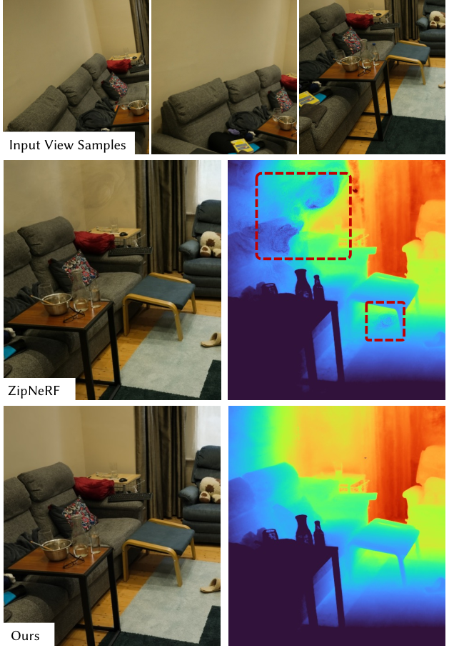
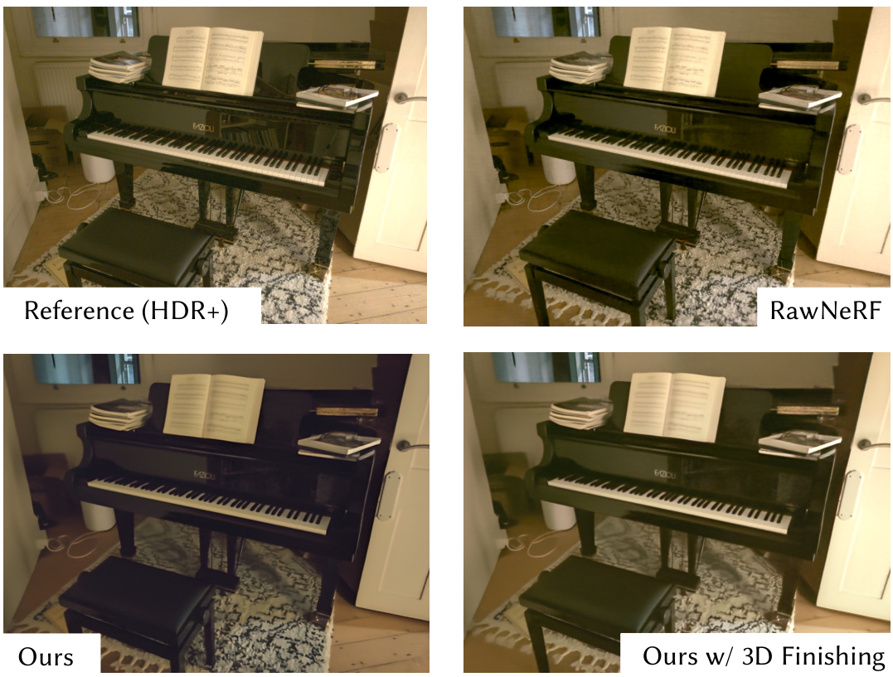
变量:训练阶段 $\lambda_{TV}\in\{0,\ 0.1,\ 10\}$。结论:无 TV 时网格的仿射平移分量编码低频外观(墙上阴影),在辐射场中留下 ghost 伪影;弱 TV(0.1)压不住;$\lambda_{TV}=10$ 才干净——"大权重是关键"是论文原话(§3.3)。finishing 侧同理(附录 C Fig 22):去掉 TV 后未见区域色彩不自然,TV 充当了低秩张量补全的局部平滑先验(权重固定 1)。
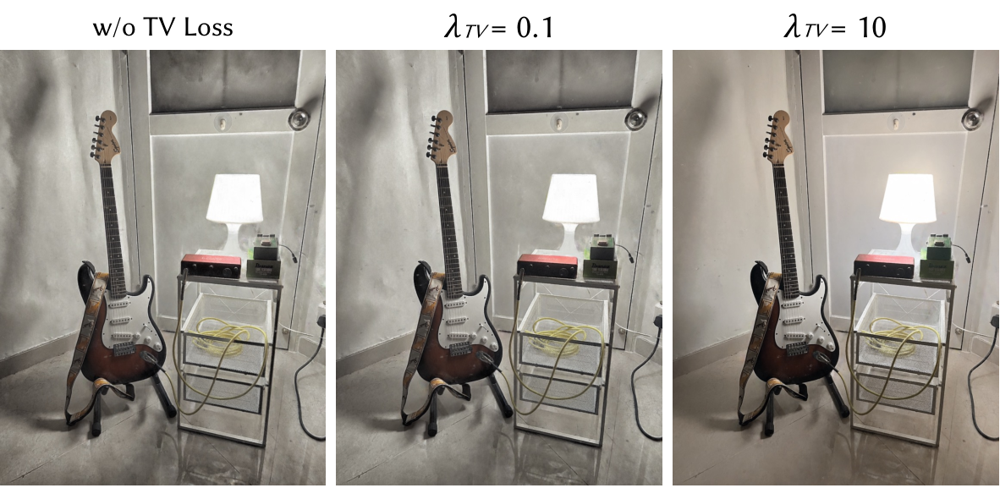
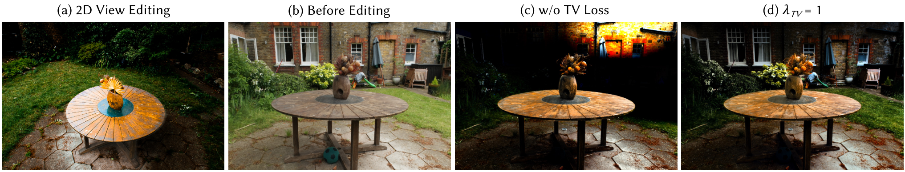
对照:① direct 5D 张量(无低秩);② 高秩 R=16;③ 本文 R=5。结论:direct 张量对编辑视角不可见区域无法恢复仿射系数 → 色彩失真;R=16 出现过约束不足的非自然色;R=5 在未见区域给出合理外推。秩扫描:R=1 容量不足无法升维编辑;R=3/5/6/7 效果相近(对秩不敏感);R≥10 开始色彩失真(Fig 8j 用 R=12 演示)。附录 C Fig 23 补充:大局部对比编辑(一层提亮、邻层压暗)时 R=5 会把两处变化平均化,R=8 才能分别表达——实践中先 R=5,不够再升 8。
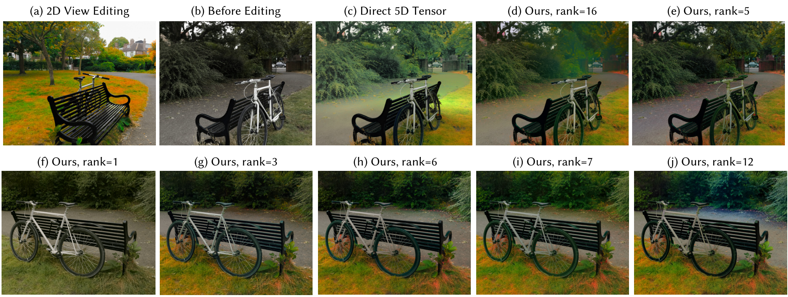
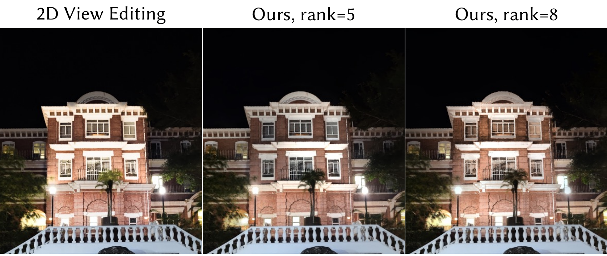
PARAFAC 恒等初始化 vs 随机初始化:随机初始化下对树桩的改色(暗绿→紫)错误波及背景;恒等初始化保证未监督区域默认"不变",编辑只沿低秩 + TV 先验传播。
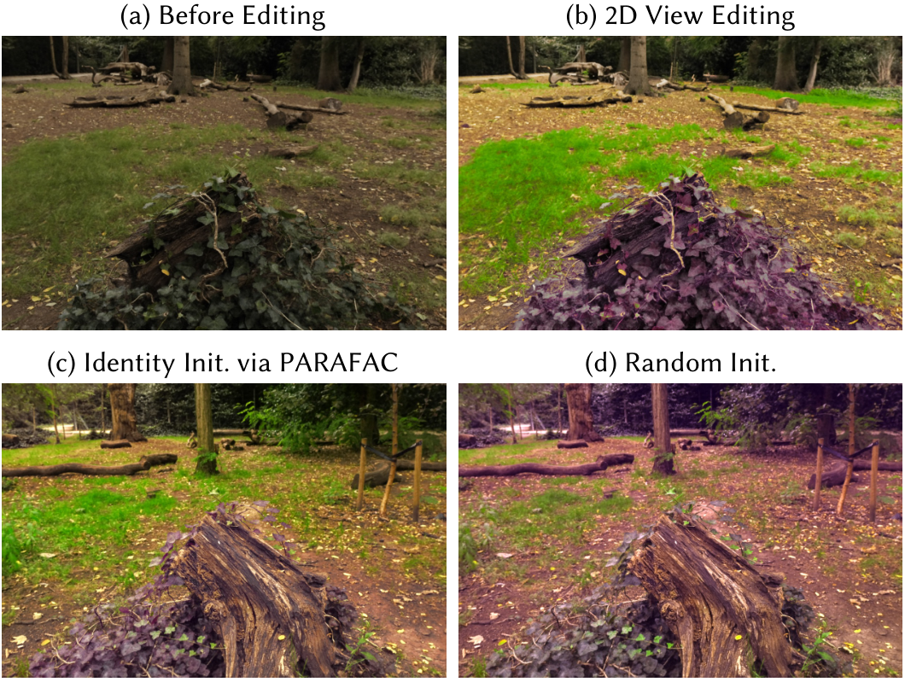
| 消融(图号) | 变量 | 结论(机制) |
|---|---|---|
| 双边空间 vs 纯空间,训练(Fig 18) | 有无 guidance 值维 | 纯空间仿射在高局部对比区域保不住亮度(相邻亮暗像素被迫共享变换)→ 新视角伪影;值维让"位置相邻但亮度不同"的像素走不同仿射。 |
| 网格分辨率,训练(Fig 20) | $(1,1,1)$ / $(8,8,4)$ / $(16,16,8)$ | $(1,1,1)$ 退化为全局仿射 → 色彩失真,证明"局部"是必要的;$(8,8,4)$ 与 $(16,16,8)$ 差异不大。 |
| 双边 vs 纯空间,finishing(Fig 21) | 有无值维 | 纯空间低秩补全无法区分编辑主体与邻近区域,造成"颜色污染";值维保证只有黄色区域被调紫。 |
| 边缘感知(Fig 19) | — | 前景提亮/背景压暗的 halo 在双边空间下被缓解。 |
| 可学习 guidance(Fig 25) | 灰度 vs 2 层 MLP | 灰度引导在改色任务中把等亮度异色区域绑死;学习引导能分离颜色分量,保持色相只调亮度。 |
| GLO 对比(Fig 24) | GLO vs 本文 | GLO 把镜面高光烘进场景(解释掉视角相关效果);低光下 GLO 调制高频噪声在暗部出伪影。本文网格是低频 ISP 表示,天然规避两者。 |
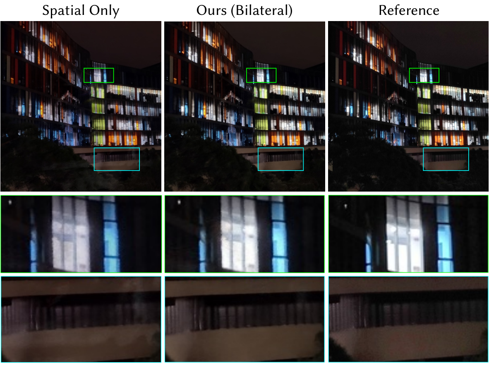
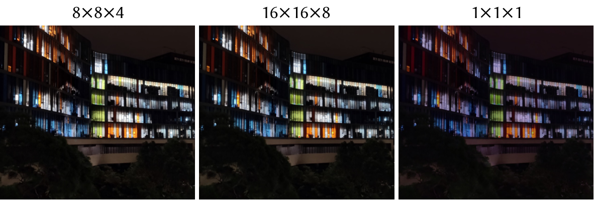
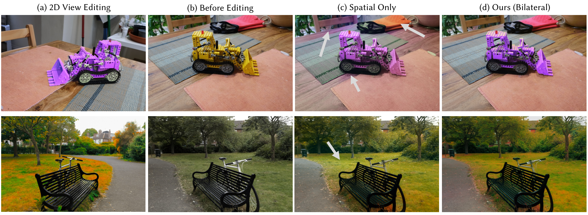
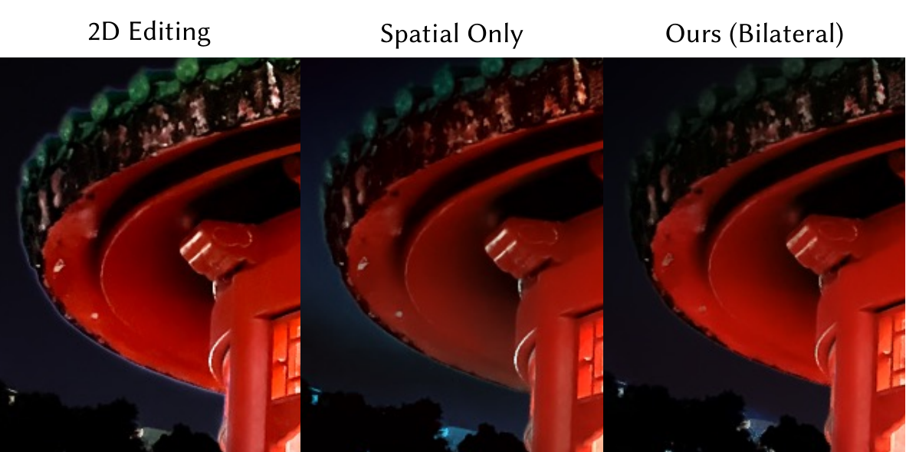
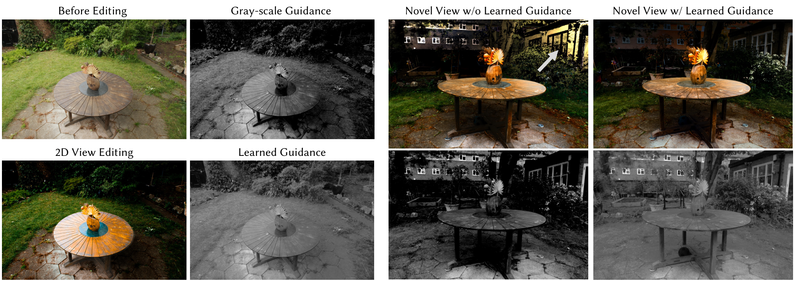
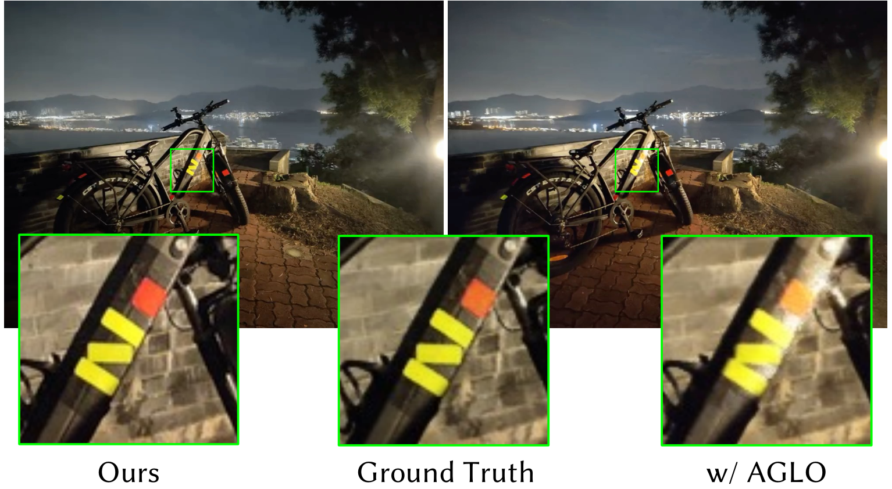
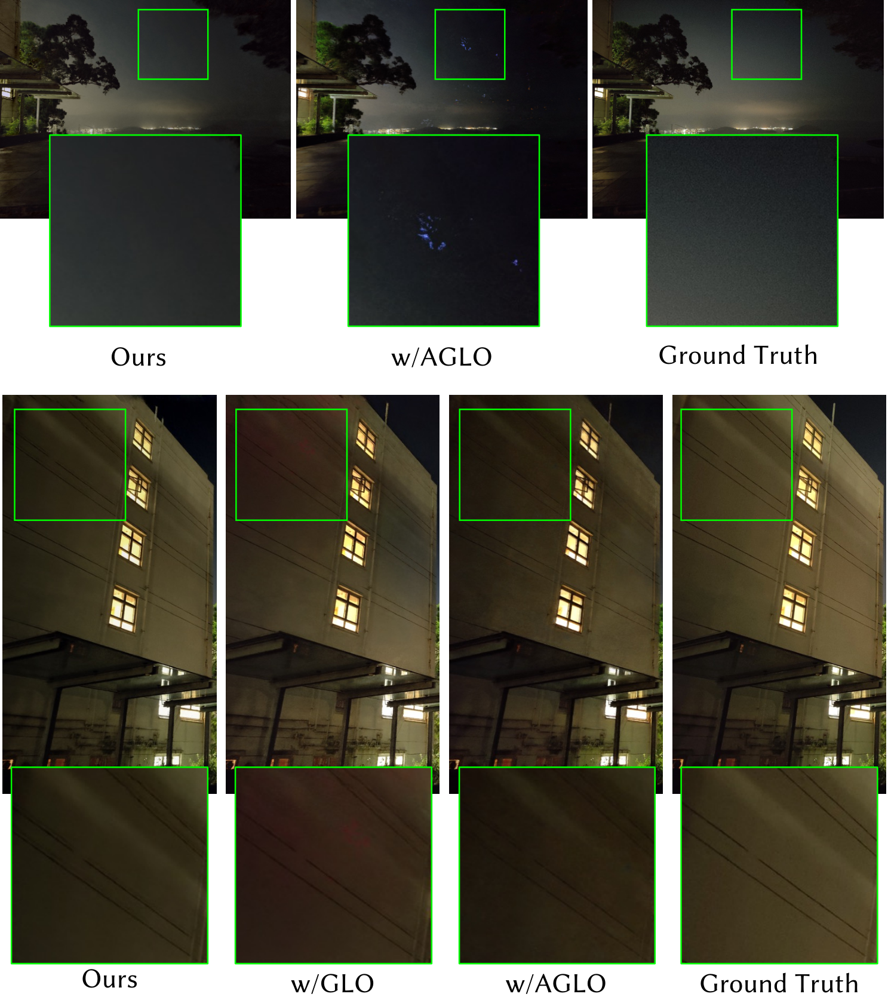
| 方法 | 年份 | 输入假设 | 不一致性的表示 | 监督信号 | 训练时长 | 推理开销 | CC PSNR↑ / LPIPS↓ | 开源 |
|---|---|---|---|---|---|---|---|---|
| ZipNeRF(baseline) | 2023 | sRGB,理想一致 | 不处理 | 渲染损失 | ≈2.25 h(3090,附录 A) | 0 | 25.17 / 0.1823 | 非官方 PyTorch 重实现 |
| NeRF-W(GLO) | 2021 | sRGB in-the-wild | 每视角可学嵌入向量(全局调制) | 渲染损失 | — | 0 | 26.54 / 0.1439(w/GLO) | 无官方 |
| ZipNeRF w/AGLO | 2023 | 同上 | 每视角仿射变换(全局) | 渲染损失 | — | 0 | 25.39 / 0.2003 | — |
| HDRNeRF | 2022 | 多曝光 LDR | per-channel MLP 全局色调曲线 | 渲染损失(曝光条件) | — | 色调 MLP 查询 | 24.03 / 0.3951 | ✓ |
| LLNeRF | 2023 | 低光 sRGB | 增亮 + 降噪 + 颜色校正模块 | 渲染损失 | — | 0 | 21.71 / 0.4466 | ✓ |
| RawNeRF | 2022 | raw 线性数据 | 绕过 ISP(不在 sRGB 训练) | raw 域渲染损失 | — | 后处理 ISP | —(本文仅定性对比,Fig 7) | ✓(数据) |
| BiLaRF(本文) | 2024 | 普通 sRGB(允许逐视角 ISP 增强) | per-view 3D 双边网格(局部仿射) | 渲染损失 + 网格 TV(×10) | ≈2.25 h + 修图 15 min(3090,附录 A) | 0(训练后丢弃) | 27.53 / 0.1336 | ✓ Apache 2.0 + nerfstudio 集成 |
| 范式 | 代表方法 | 核心先验 | 局限 |
|---|---|---|---|
| 2D 计算摄影(网格表示的源头) | Bilateral Grid(2007)→ BGU(2016)→ HDRNet(2017) | 图像增强 ≈ 双边空间的局部仿射变换,可学、边缘感知 | 只在 2D 图像上工作,无 3D 一致性概念 |
| 外观嵌入 | NeRF-W GLO(2021)→ AGLO(ZipNeRF,2023) | 视角差异 = 低维潜向量调制 | 无结构,解释掉视角相关效果、放大噪声 |
| 物理建模 ISP | HDRNeRF(2022)、RawNeRF(2022) | 显式建模 CRF / 直接在 raw 域训练 | 全局曲线表达力不足;raw 数据门槛 |
| 低秩张量表示 | TensoRF(2022,辐射场 VM/CP 分解)→ BiLaRF(2024) | 高维信号可用低秩分解紧凑表示 | — |
| 可微 ISP 代理(本文开创) | BiLaRF(2024)→ nerfstudio splatfacto 集成(2024) | ISP 残差 = per-view 低频局部仿射;编辑传播 = 低秩张量补全 | 只管光度类不一致,不管瞬态物体/几何不一致 |
| 干扰过滤(互补路线) | PDF-GS(2026) | 瞬态干扰在梯度域呈稀疏离群,渐进式过滤 | 针对人/车等瞬态遮挡,不处理 ISP 光度差异——与本文正交互补 |
库内交叉:鲁棒重建方向的兄弟笔记还有 3DGS 基础与改进综述(3DGS 骨干侧背景,nerfstudio 集成的就是 splatfacto);若输入是生成视频且帧间几何不一致,问题升级,见 VideoToWorld——BiLaRF 只处理光度不一致,几何错位它管不了。
nerfstudio ≥v1.1.4 的 splatfacto 加一个 flag(--pipeline.model.use-bilateral-grid True)即可启用;网格参数量每视角 24K(16×16×8×12),93 个视角也仅 ~2.2M 参数;官方实测训练时长与骨干持平(附录 A)。推理时网格丢弃,渲染开销不变。
手机/运动相机实拍、多机位不同型号混拍、室内外交替、夜间长曝光、有意包围曝光(HDR 融合)——只要输入存在逐视角 ISP 漂移就有效。vggt_human 若用手机环绕拍摄人像,自动曝光/白平衡逐帧跳变是常态,正落在该方法的甜区。
① 不管瞬态物体(云、行人)——那是 PDF-GS 的领地,两者可叠加;② in-the-wild 旅游照不如 GLO,论文建议联合使用(Fig 16b);③ finishing 不能升维模糊/锐化这类非点算子(Fig 17);④ 极局部的编辑受网格分辨率与秩的表达力限制(Fig 17 第二行)。
| 项 | 成本 | 出处 |
|---|---|---|
| 显存 | 官方 gin 注释:24GB 卡把 batch 从 65536 降到 16384 即可运行 | configs/360.gin、llff.gin 注释 |
| 训练时长 | ≈2.25 h(ZipNeRF 骨干,RTX 3090);finishing 2500 步 ≈15 min | 附录 A |
| 数据要求 | 仅需 sRGB + COLMAP 位姿;不需要 raw、不需要 GT depth、不需要曝光元数据 | §5.1、附录 B |
| 依赖 | 官方:torch 2.0.1 + tensorly 0.8.1 + gridencoder CUDA 扩展 + torch-scatter;nerfstudio 路线无额外依赖(tensorly 已在其依赖内) | README、requirements.txt |
| 移植性 | lib_bilagrid.py 单文件 411 行,官方明确定位为"拷走即用";live demo 基于 ngp_pl(Instant-NGP)证明了跨骨干迁移 | README:14-26、项目页 |
use_bilateral_grid 做一次 A/B——成本是一条命令,收益直接看 floaters 是否消失。lib_bilagrid.py 的 BilateralGrid 类(~90 行核心),在渲染输出与 L1/SSIM 损失之间插入 slice,加 10×TV 损失与独立参数组(参考 splatfacto.py:848-850, 957-958 的 30 行接线代码)。问题:单个低分辨率 4D 网格对极局部编辑(如只改建筑局部纹理)表达不足,论文 Fig 17 第二行承认"更大分辨率和更高秩都不能有效改善"。建议:按论文自己的提示引入 HDRNet 式多尺度双边网格,或残差式 coarse-to-fine 双网格(粗网格管全局色调、细网格管局部),代码上 BilateralGridCP4D 已支持任意分辨率,欠的是多尺度监督结构。
问题:本文只管光度不一致,瞬态物体(云/行人)产生的 floaters 明确无解(§5.4 Fig 16a);而 PDF-GS 类方法只管瞬态不管光度。真实手机采集两种问题并存。建议:网格解耦 + 梯度域/不确定性干扰过滤串联,顺序上先光度解耦再干扰过滤更合理(光度不一致会污染干扰检测的残差统计)。
问题:可学习 guidance 只在单个编辑视图上拟合(附录 E 末段自认"对未见区域颜色分布可能不泛化");训练阶段则全局固定 BT601 灰度,对强饱和色场景引导区分度有限。建议:guidance MLP 用多视角渲染一致性做自监督微调,或对训练阶段也引入(轻量)可学习引导并加跨视角一致性正则。
问题:附录 F 的复杂案例(红色庙宇 vs 日落天空编辑方向冲突)靠手动拆两个 4D 网格解决,说明单网格的表达瓶颈在多目标差异化编辑场景真实存在,但目前完全靠人工判断。建议:按语义分割或编辑强度自动分区,每区独立低秩网格,加区间平滑正则——改动集中在 finishing 脚本,不动核心库。
问题:当前 3D 网格作用在渲染后的 2D 像素上(图像空间),3DGS 版亦然(nerfstudio splatfacto 是整图后处理);若把 per-view 网格挂在逐高斯/逐采样点的 3D 空间(类似 finishing 的 4D 思路做训练解耦),理论上可处理视角间部分重叠区域的精细差异。建议:探索 per-view 4D 网格(空间 + 引导)替代 per-view 3D 网格,代价是失去"图像空间低分辨率"的简洁性,需实验验证收益。⚠️【推测】此为本人推断方向,无论文/代码佐证。
问题:主实验只在 7 个自采夜间场景上做数值评估,公开 benchmark(mip-NeRF 360 等)只有定性展示;夜间小数据集上 +0.76 dB 的统计显著性有限。建议:用附录 B 的 ISP 仿真管线(随机数字增益 + sRGB gamma/HDR+ 色调映射)对 mip-NeRF 360 全量做受控退化评测,给出可复现的公开基准。
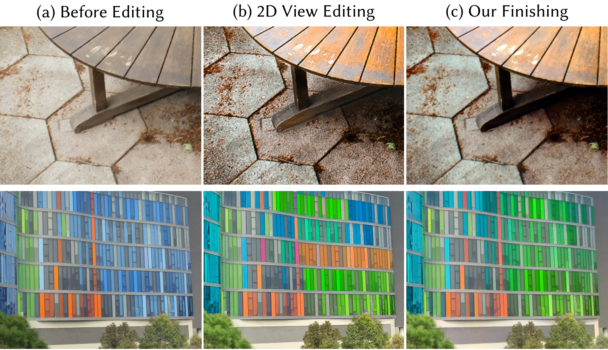
BiLaRF 的价值不在于发明了一个新表示——双边网格是 2007 年的技术、CP 分解是 TensoRF 用过的工具、per-view 外观建模有 GLO 在前。它真正的贡献是把问题重新定义对了:相机 ISP 造成的多视角不一致,不是要让 NeRF"更鲁棒地拟合",而是应该被结构性地剥离给一个专门的、物理形态匹配的可微代理(低频、局部仿射、per-view)。这个重定义带来三个直接好处:辐射场回归干净(无 floaters)、HDR 融合与光照解耦成为免费副产品、同一个表示升维后又把"修一张图"变成"修整个 3D"。
从演进脉络看,它是"2D 计算摄影表示 → 3D 重建组件"这条迁移路线上的关键一站,也是少有的发表当年就被主流框架(nerfstudio splatfacto)官方收编的表示层工作。对工程界的实际意义:3DGS/NeRF 训练对输入数据质量的容忍区间被显著拉宽——自动曝光的手机素材从"需要手动锁曝光的专业采集"降级为"随手拍也能用"。
lib_bilagrid.py 单文件可移植)use_bilateral_grid;仅训练解耦,无 4D finishing)